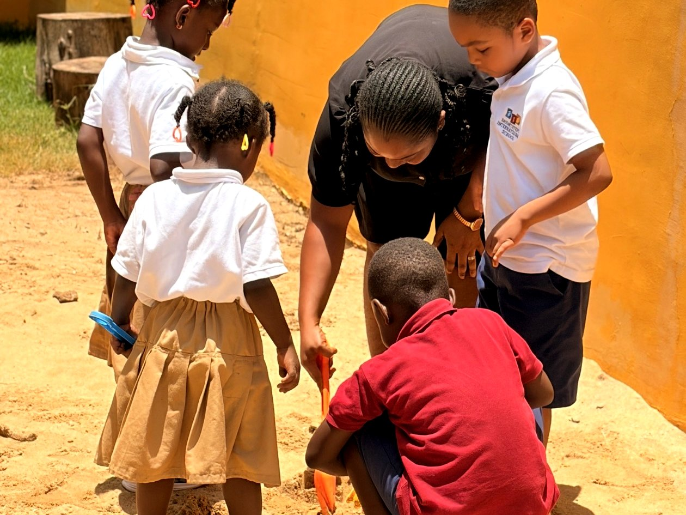
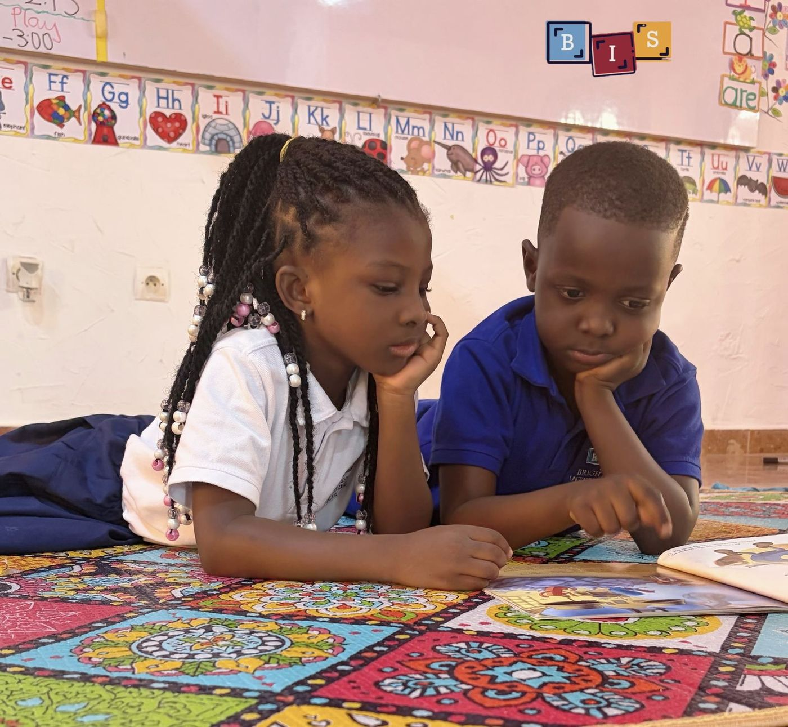
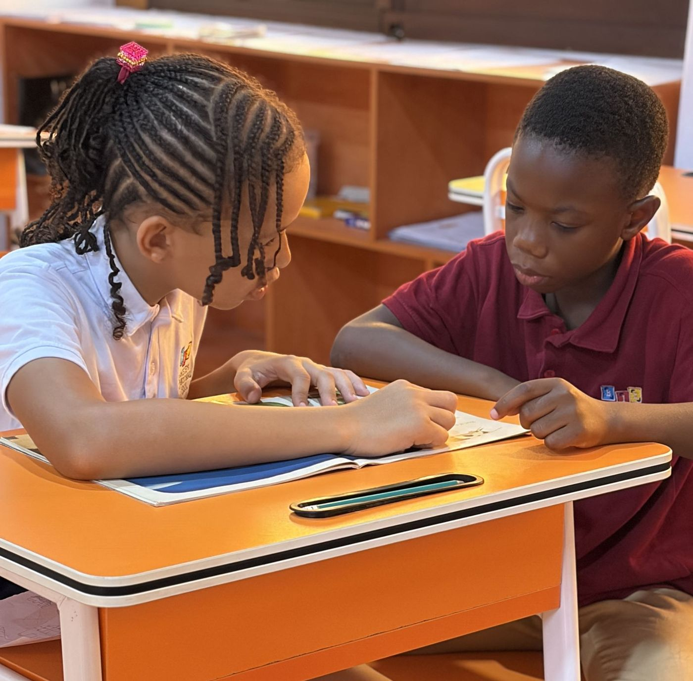
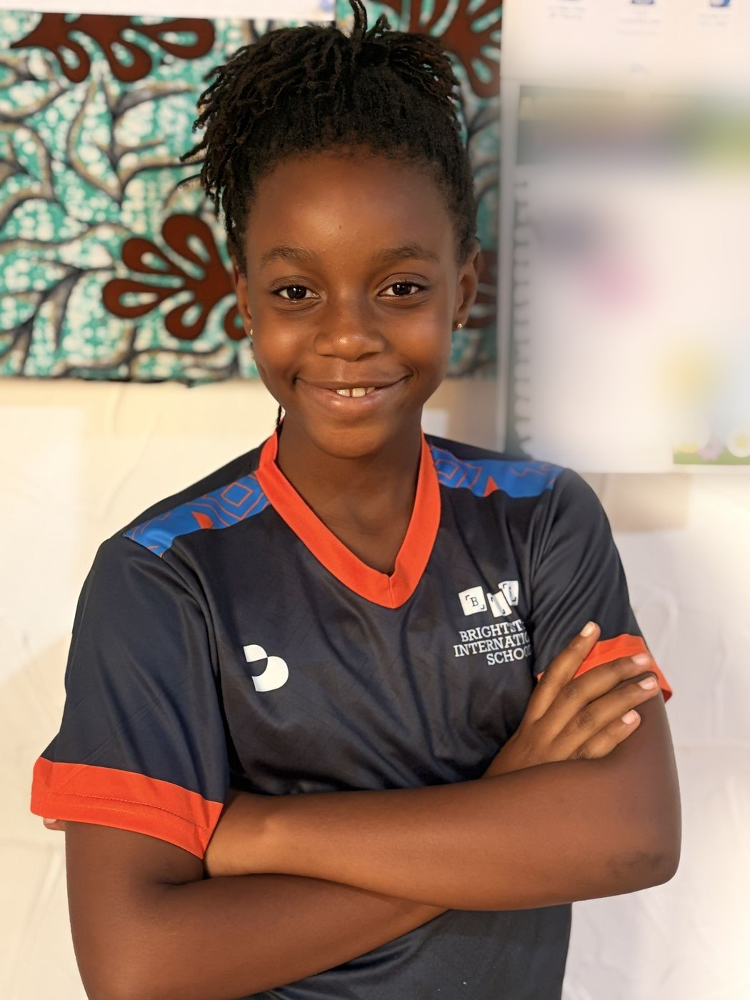

Approche Académique
L'éducation devrait faire plus qu'enseigner des faits. Elle doit inspirer les élèves à poser des questions, explorer des idées et découvrir leur propre potentiel.

Notre programme allie une approche fondée sur l'investigation à la clarté et à la rigueur des Common Core State Standards. Cette combinaison aide les élèves à développer de solides compétences en lecture, en mathématiques et en pensée critique, tout en cultivant la créativité, l'autonomie et une perspective mondiale.
L'anglais est notre principale langue d'enseignement, et le français est introduit dès le plus jeune âge pour favoriser la communication et la compréhension interculturelle. Nous respectons le parcours unique de chaque élève grâce à un accompagnement personnalisé et un état d'esprit tourné vers la croissance et la persévérance.

Les élèves de Petite, Moyenne et Grande Section apprennent par le jeu, l'exploration et la découverte dans un environnement chaleureux et sécurisant. L'anglais s'intègre naturellement aux routines quotidiennes, à travers les histoires, les chansons et les interactions.

Du CP au CM2, les élèves construisent des bases solides en littératie, en mathématiques, en sciences et en sciences sociales, tout en renforçant leur communication, leur collaboration et leur capacité à résoudre des problèmes.

En 6e et 5e, les élèves approfondissent leurs connaissances dans toutes les matières tout en développant la confiance, le caractère et l'autonomie nécessaires pour réussir au lycée et au-delà.